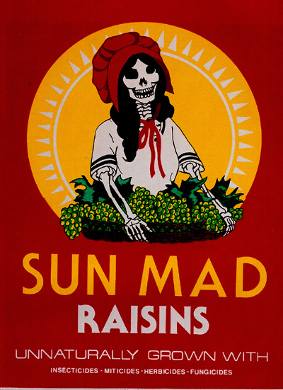

|
1999 is the 30th annivesary of El Museo del Barrio, and as part of the observance the museum has mounted "Pressing the Point: Parallel Expressions in the Graphic Arts of the Chicano and Puerto Rican Movements."
The passions of 1969 lie at the root of numerous cultural institutions. During that year, the heat of virulent socialist strains of grass roots politics, like the famous "prairie fire" of the Weather Underground, touched New York museums. Although far short of revolution, the game of cultural politics was in earnest, and in the strident demonstrations and the waves of continuously forming and dissolving political groups, the revving of the motor of that most modern mode of social change could be clearly heard.
Through this ferment, new ethnic coalitions were formed, abetted by regional grass-roots organizing movements and the national anti-war mobilization of the new left. Solidarity between social movements arose across what co-curator Yasmin Ramírez calls "a web of networks." The early 1970s saw a phase of institution building in the cultural sphere, which coincided with the rise of new academic departments of Puerto Rican, Chicano, black, and women's studies.
The synthesizing intentions of the "Pressing the Point" exhibition, drawing together some of the Latino activist poster art of two coasts, invite broad generalizations. For both communities it is most obvious that a fundamental objective is the self-conscious construction through image work of a powerful sense of nationalist pride, as it was for the political movement that stood behind all this work.
These artists embraced past politico-aesthetic traditions, like the Chicano artists who utilized calaveras, a popular tradition of festive display favored of Posada, the influential 19th century Mexican popular illustrator. (The calaveras tradition is the subject of the concurrent exhibition "¡Viva la Muerte!, Artwork Inspired by the Celebration of Día de los Muertos.")
Chicano artists were also entranced with the idea of an Aztec past, supported by the historical political conception of Aztlan, a pre-Contact and pre-Conquest region encompassing southern North America that, under the sign of myth, erased the more recent distinction of nations like Mexico and the United States. This comes through most clearly in the stylized Aztec ferocity of Xavier Viramontes’ Boycott Grapes (1973), and, in what is in this context a revival image, executed in a high key of rage, Yolanda M. Lopez’s Who's the Illegal Alien, Pilgrim? (1981).
While there is rage in this work, there is also plenty of canny humor. The strategies of cultural detournement that baffled authorities and the aggressive play-acting of media politics were strong features of the Chicano "brown power" movement in southern California.
A poster-making group started in 1970 in Sacramento called itself the Revolutionary Chicano Artists’ Front–or RCAF. They transmuted their name when others misconstrued it ("are you Canadian?"), ending up as the Royal Chicano Air Force. They worked the pose of motley revolutionary fools, supporting the UFW grape boycott spearheaded by Cesar Chavez with antics performed in the spirit of El Teatro Campesino.
The RCAF were highly self-conscious visual artists as well. A 1975 poster for El Centro de Artistas Chicanos is a calaveras version of W.S. Mount's Triumph of the Painter (title?; 18XX). The calaveras returns in Ester Hernandez’s 1982 Sun Mad, in which the smiling Anglo missy of the trademark raisins package has been remade to support the workers' struggle against unsafe conditions in the vineyards.

The romance of Aztlan was fed by vast spaces of continental desert. The dreams of the island of Puerto Rico are far more historically embedded, and its artists more deeply involved with currents of mainstream European and New York school painting than their West Coast comrades. Continuous complex negotiations with European modernism, Surrealism and Cubism, and New York Pop are clear in the work of Puerto Rican artists displayed here. The indigenismo of Taller Boricua sought to recover one of the most completely effaced New World native traditions, that of the Taíno peoples of antique Borincua (Puerto Rico). Surrealism is the key to absorbing the exemplary traces of this ancient people, just as the figure of the poet-revolutionist has been central in the so far unsuccessful nationalist struggle on the island.
The section of the exhibition entitled "Pop(ular) Style" makes clear that Pop art meant the appropriation of advertising to make political points. Among these is the figure of the Quaker, ubiquitous on packages of corn meal, who also stood for Richard Nixon. Rupert Garcia's Decay Dance (1969) welds the Quaker to a sliding and shifting Mona Lisa in a bright, simple image which is a complex meditation on two promiscuously reproduced benign-looking European faces. The pop style works of Garcia shown here are clearly art first and only incidentally posters. As such, his Dos Hermanos (1969), in which a pair of black faces are stamped against a gold-color background with a piquant patch of purple is a highly contemporary study on color, both graphic and skin.
Also deeply invested in a view of contemporary art is the work of Carlos Irizarry, which seems like a type of conceptualism. It is artistic journalism, a comment on art and culture using saturated colors and graphic collage seen through the framework of a heavy grid. Irizarry interrogates the artistic product and persona of Pablo Picasso and Andy Warhol in mural length serigraphs, and memorializes the Moratorium demonstrations of 1970.
A 12-page half-tabloid exhibition flyer with interesting essays by guest curator Henry C. Estrada and adjunct curator Yasmin Ramírez in both English and Spanish rounds out a picture of the period sketched by the over 70 works from the collections of El Museo del Barrio and the Gilberto Cardenas Collection of Latino Art in Jack S. Blanton Museum of Art, University of Texas at Austin.
"Pressing the Point" is well done and, given the museum's means, it is ambitious. This exhibition begins to fill an important gap in the understanding of a period during which the institutions of contemporary art were significantly reshaped. The works and artists of this era have in large measure been lost in the shadow of the cold war, the failed "revolution," and a happy return to art-as-consumption that began during the Reagan-era. Yet this direct, comprehensible, straightforwardly political work lies behind the post-modern position-takings of contemporary hybridity, post-colonial diasporic nomadism, and other contortions of ethnic identity, and sensational explorations of painful historical stereotypes by younger artists of color. It is certainly time that these artistic forebears be accounted for.
My cavils, then, amount to no more than a list of what, given more funds, I think the curators ought to have done. The urge to exhibit posters, this primarily instrumental, often propagandistic, "low" genre, with all the respect due to singular, autonomous works of painting and sculpture is understandable. But, at the same time, extensive wall captions and text strive to put the show in historical context. I wanted to see more context for these works, that is, to see the posters being used at the scene of the struggle, on the streets, and in meeting places, growing fields, city storefronts, demonstrations, art shows. And, since the workshop context of their production was also so important, I wanted to see that scene as well. These posters, I suspect, are not so easily considered as the products of monographic autonomous producers, but rather have their genesis in profoundly collaborative moments and situations.
related links:
El Museo website
http://www.elmuseo.org/
Getty Information Resources, inventory of the prints of Posada
http://www.getty.edu/gri/htmlfindingaids/posada.html
|
|